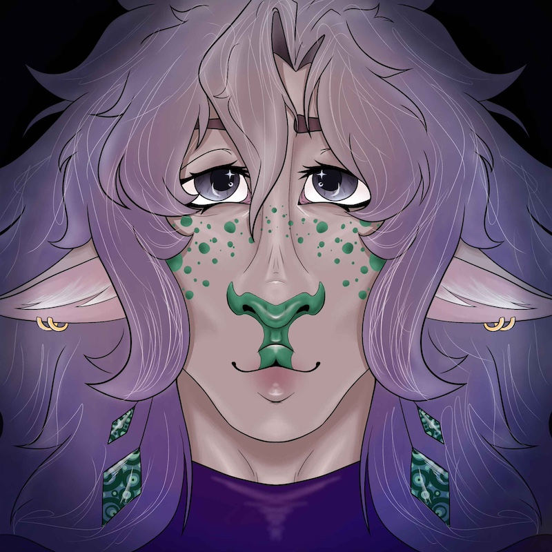

Intro
Ethan
Raiden
Raiden Atlas
Welcome to Raiden's Page
- Full Name: Raiden Atlas
- Age: Unknown
- Birthday: June 20th (Gemini-Cancer cusp)
- Height: 6'10"
- Species: Firbolg
Brief Description of Looks:
- Eyes: Icey green-grey
-
Hair: Grey fading into a grey-purple, wavy and messy- falling
around his shoulders or longer
- Build: Built, toned, but thinner frame. "Sleeper-build"
- Skin: Warm grey
- Extras:
-
Piercings: dangly Malachite diamond shaped earrings, two
cartilage piercings on both ears, miscellaneous ear piercings
- Scars: miscellaneous self-harm and fighting/spell scars
-
Firbolg Markings: Green colored freckles and accents across his
body, with a feline or canine-like nose
Backstory:
Raiden lives alone in a hidden woodland on the outskirts of society,
minding his business. He has forest creatures who normally come to visit
him that he regularly feeds. Although he has a younger brother, they do
not comunicate much these days. Raiden practices with the supernatural-
owning many crystals and other objects known to have lost spirits
connected to them. He can hear their woes and tries to make offerings when
he can in an attempt to help them move on peacefully.
